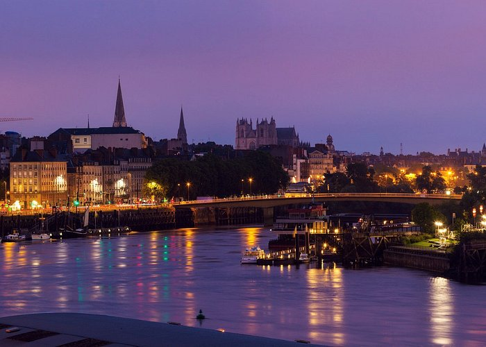
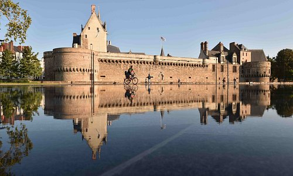
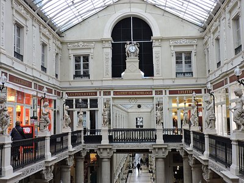

Explorez Nantes


Nantes : informations
Nantes est une ville innovante qui a su se réinventer et devenir l'une des villes françaises les plus dynamiques et avant-gardistes. Fréquentée par des artistes, ingénieurs et étudiants, son paysage en constante évolution s'articule autour de ses racines médiévales et de son riche patrimoine maritime.
Nantes : commencez à organiser !
Créez un voyage pour enregistrer et organiser toutes vos idées et les visualiser sur une carte.

Nantes : les immanquables
Jardin des Plantes
Jardins
Les Machines de l'Ile
Musées spécialisés

Passage Pommeraye
Commerces